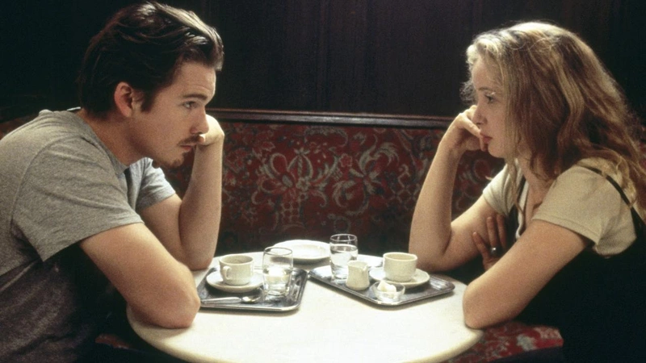
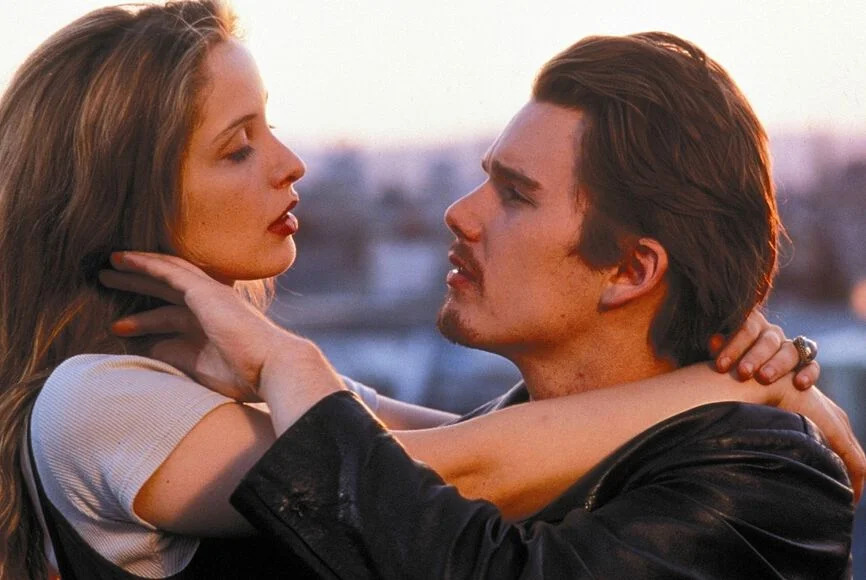
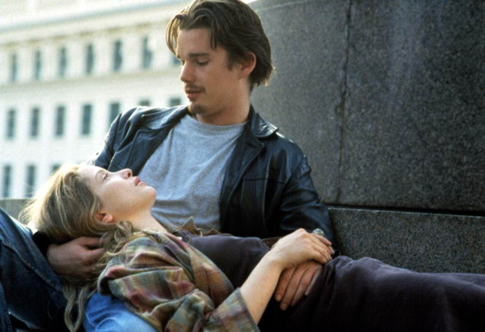

Jesse y Celine se conocen por casualidad, ninguno de los dos debería estar en ese tren. Él debería estar disfrutando del verano con su novia, en lugar de ello su corazón está roto y viaja por Europa a la espera de que su avión despegue rumbo a casa. Celine, por su parte, podría llegar a París en menos horas tomando el medio de transporte más lógico, el avión, pero su miedo a volar la conduce directamente a los brazos de un desconocido americano.
El azar les lleva a ser compañeros de viaje y la insistencia e ingenuidad de Jesse, unidas a la predisposición de Celine y a unas líneas irrefutables del americano, a compartir una romántica velada en Viena.
El filme gira en torno a los inicios y a la confianza, dos personas ajenas, de diferente procedencia, conectan inmediatamente, no sabemos si por la falta de pretensiones que provocan los primeros instantes de una relación o porque están hechos el uno para el otro.
A pesar de ser una película de índole romántica, no peca de edulcorada en ningún momento, de hecho la escena con un mayor contenido romanticón, ambos subidos en la Noria de Viena y él rogando por un beso, es ridiculizada en momentos posteriores por ella. Se juega con entrar y salir del romance una y otra vez, en un momento, los protagonistas están en una cabina haciendo una escucha de un disco, sin prestarle ninguna atención para más tarde diseccionar sin escrúpulos las relaciones duraderas.
Ese tira y afloja entre creer y no creer es lo que define Antes del amanecer: por momentos se posiciona en un lugar que no cree en el amor eterno, ni la fidelidad ni los sueños, para al instante siguiente creer a ciencia cierta en las habladurías de una adivina.
La grandeza de Linklater y Krizan es hacernos creer en un amor realista pero que se empapa, cual galleta en café, de las más extremas creencias románticas. Jesse y Celine encierran en cada uno de ellos a unos soñadores que solamente dejan salir a flote cuando realmente se sienten cómodos, cuando se deshacen de esa fachada que el ser humano se ha visto obligado a llevar más y más con el paso del tiempo. Las relaciones personales se complican cuanto más avanzado es el mundo, de hecho ya podemos observar el contraste entre el filme, 1995, y la actualidad. En 1995 era posible perderse y no tener cada instante de los viajes planificados, había de preguntar para concretar planes y recabar información; hoy en día todo puede hacerse de modo informatizado, resulta mucho más complejo y extraño el intentar improvisar, sucediendo lo mismo con las relaciones amorosas, al instante ya puedes saber cuáles son las aficiones, compañías e incluso ex parejas de alguien que acabas de conocer gracias a las nuevas tecnologías, el misterio es algo pasado de moda pero que quizás habría de volver.
El tema que sobrevuela durante la totalidad del encuentro entre Jesse y Celine es el sexo, pero siempre quedando enmascarado por otras circunstancias. Finalmente, queda como algo secundario, la única escena en la que pueden o no pueden hacerlo es la única que no se ve de todos los momentos que comparten. Si nunca hubiera habido secuelas, no habríamos sabido si lo hacen o no, porque eso no es lo importante, lo realmente relevante es el conocer a una persona y poder enamorarte, no vamos a llamarlo a primera vista, pero el ser capaz de abrirte y descubrir todos tus secretos, hasta aquellos más vergonzantes.
Las ventajas que proporcionan los inicios de una relación son exprimidas al máximo por los guionistas, por ejemplo a la hora de romper o apoyar creencias o prejuicios genéricos sobre hombres, mujeres o diferentes nacionalidades. El hecho de que Jesse sea americano sirve de excusa para dar por hecho que solamente habla inglés y que es incapaz de aprender otro idioma o de mostrar deseos de hacerlo.
Las conversaciones mantenidas no son genéricas y aburridas sino que van desde lo particular a lo ajeno en un abrir y cerrar de ojos, de las historias más personales, esas que solamente se cuentan a los allegados o que incluso provocan tanta vergüenza que son ocultadas en el fondo del cajón más profundo, hasta otras que se pueden mantener en un ascensor.
La diferencia la marca la predisposición de los protagonistas por ahondar tanto en su psique como en la de su compañero de aventura, hecho que en una sociedad cada vez más deshumanizada se da con poca frecuencia. Lo que se conoce como mojarse o implicarse tanto emocional como mentalmente es un hecho cada vez más difícil en unos días de tremenda superficialidad. Si algo no son Jesse y Celine, es superfluos, tienen opinión formada sobre todos los temas y si no están dispuestos a utilizar la mayéutica para enriquecerse. La palabra es el arma de Linklater y sus guerreros tienen un léxico rico y una mente aguzada que les convierte en maestros en las artes de la tertulia.
Un paseo sin nada más se torna en una disertación sobre el ser humano que solamente causará aburrimiento o indiferencia en aquellos que para ello se esfuercen o a los que su inteligencia no les permita dilucidar las palabras vertidas en el filme, ni tan siquiera los potentes silencios que golpean como caballos desbocados a aquel que ose ponerse en pie frente a ellos.